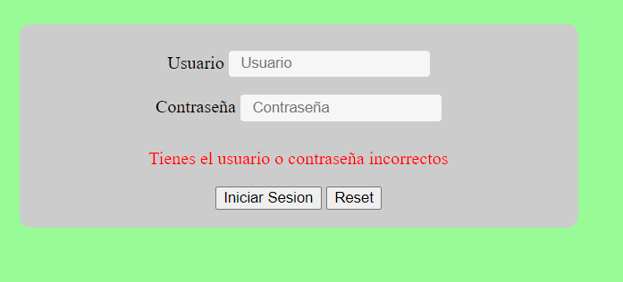
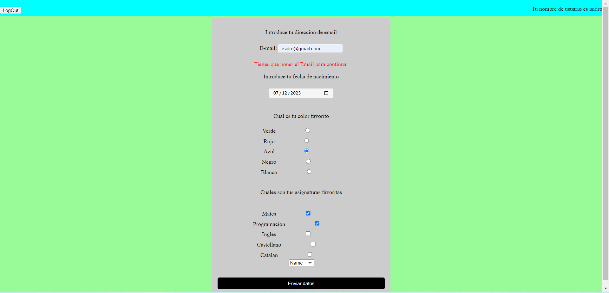
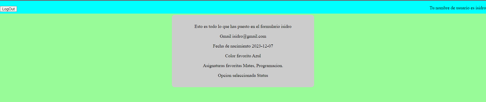

ESO
Titulación de Grado Medio en Sistemas Microinformáticos y redes.
Primer año cursado de una Titulación de Grado Superior en Desarrollo de Aplicaciones Multiplataforma.
HTML
CSS
Java
PHP
JavaScript
BDD
Hibernate
SpringBoot
Este proyecto es de PHP en el cual se hace un login y varios formularios y tambien se utilizan cookies
  